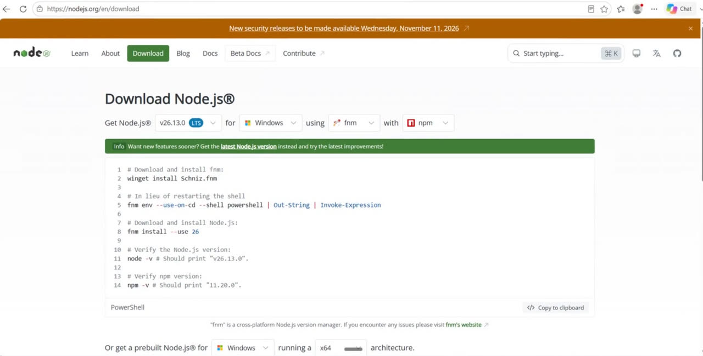
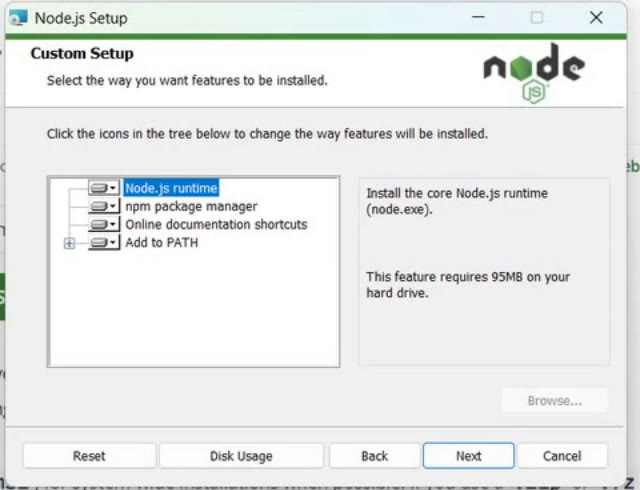
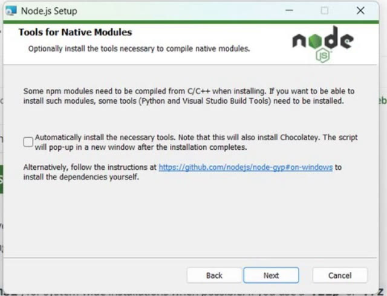
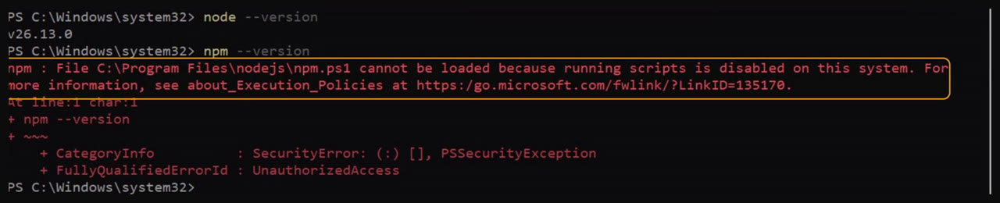
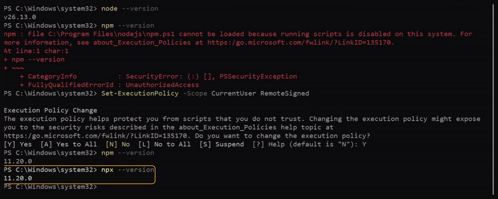

Why you need Node.js
Say you want to try an AI tool, or connect an MCP server to your assistant. The setup page gives you one line to run, and it starts with npx. You paste it into PowerShell, and Windows says it has never heard of npx.
That is because npx is not a Windows command. It comes with Node.js, a free, open-source runtime that lets JavaScript programs run on your own computer. Install Node.js, and you also get npm, its package manager, and npx with it.
You need only two things: a Windows PC and an internet connection. It takes about ten minutes, most of it waiting for the installer.
Download the LTS installer
Open the download page
Go to the Node.js download page on nodejs.org. From the home page, Get Node.js brings you to the same place.

The page offers the LTS version first. LTS means long-term support: it gets fixes for a long time, so it is the safe pick. Your version number may be newer than the one in the picture, and that is fine.
The box of commands below it uses fnm, a tool for keeping several Node.js versions. You do not need it for a first install.
Download the Windows Installer
Scroll down and click Windows Installer (.msi). When the download finishes, click Open file. Windows takes a minute or two to prepare the installer, so wait for it.
Click through the setup wizard
The wizard asks five questions. You keep every default except one box, and that box is step 6.
Welcome and licence
Click Next. On the licence page, Next stays grey until you tick I accept the terms in the License Agreement. Tick it, then click Next.
Keep the suggested folder
The wizard asks where to install. Keep the folder it suggests, and click Next.
Keep all four parts in Custom Setup
Custom Setup lists what goes onto your PC. Leave all four as they are, and click Next.

| Part | What it gives you |
|---|---|
| Node.js runtime | The node program itself, which runs JavaScript. |
| npm package manager | npm to install packages, and npx to run them. |
| Online documentation shortcuts | Start-menu links to the Node.js documentation. |
| Add to PATH | Lets any terminal find node and npm by name. This one matters most. |
Leave the Tools for Native Modules box unticked
Some npm packages are written in C or C++. They must be compiled on your PC, and that needs extra build tools. This box would install those tools, and Chocolatey, a package manager for Windows, along with them. You do not need them to start, so leave the box empty and click Next.

Click Install
The wizard says it is ready. Click Install. If Windows asks to allow changes, click Yes.
Wait, then Finish
The progress bar may sit empty for a few minutes before it moves, so let it run. When you see Node.js has been successfully installed, click Finish.
Check it in PowerShell
Ask node for its version
Open the Start menu, type PowerShell, and open Windows PowerShell. If one was already open, close it and open a new one, so it sees the new PATH. Then type:
Any version number means Node.js is installed. Now ask npm the same question with npm --version.
On many Windows PCs, this is where the red text appears.
When npm says scripts are disabled
node answered, but npm stops with a red error. The key words are in the first line: running scripts is disabled on this system.

So why does one work and not the other? Look at the file the error names: npm.ps1. On Windows, npm starts through a small PowerShell script.
PowerShell may be set to block every script, and on a fresh PC it often is. The node command is a plain program, so it was never blocked.
Nothing is broken, and you do not need to reinstall. One command fixes it. Copy it exactly, and run it in the same PowerShell window:
PowerShell explains the change and asks you to confirm. Type Y and press Enter.
What did that change? RemoteSigned lets scripts on your own PC run, such as npm's. A script downloaded from the internet still needs a signature from its publisher. CurrentUser means the change is only for your Windows account, so it needs no administrator rights.
Now ask npm again, then npx:

Both print a version number. npm and npx share one version, so the two numbers match. Node.js is ready.
The three checks at a glance
Run these any time you want to know whether Node.js is set up on a PC.
| Type this | A working PC shows | If you see red |
|---|---|---|
node --version | A version, such as v26.13.0 | not recognized: open a new PowerShell. Still there? Install again, with Add to PATH kept. |
npm --version | A version, such as 11.20.0 | running scripts is disabled: run the Set-ExecutionPolicy line above. |
npx --version | The same version as npm | The same fix as npm. |
The takeaway
- Download the LTS installer from nodejs.org, and keep the defaults, with Add to PATH.
- Leave the Tools for Native Modules box unticked, unless a package asks for build tools.
- If npm says scripts are disabled, run
Set-ExecutionPolicy -Scope CurrentUser RemoteSignedonce, and answer Y.
Which AI tool are you installing Node.js for? Tell me under the video on YouTube.
References
Where each step and claim on this page comes from. Checked on 13 Nov 2026.
- OpenJS Foundation — Download Node.js. The LTS version, the Windows Installer (.msi), and the fnm commands we skip. link
- Microsoft — about_Execution_Policies. Why PowerShell blocks scripts on Windows, and what RemoteSigned and the CurrentUser scope mean. link
- Microsoft — Set-ExecutionPolicy. The command that fixes the npm error, and the confirm question it asks. link
- npm — npx. npx comes with npm and runs a package's command. link
- My own install — the recording for the video, Windows 11. Node.js v26.13.0 LTS; npm and npx both print 11.20.0; the red error before the fix, and none after it.
New chapters and episodes come out every week. Follow along on YouTube or the WhatsApp channel. Questions? Ask under the video on YouTube; I read every comment.